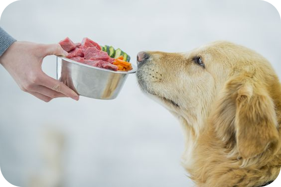
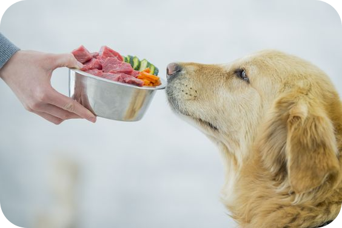
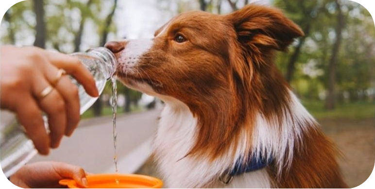
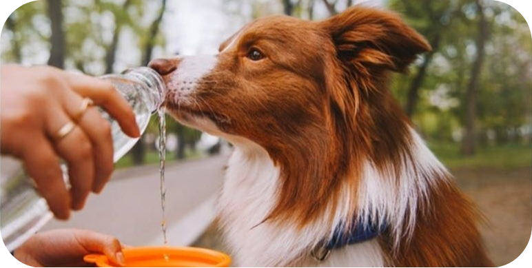
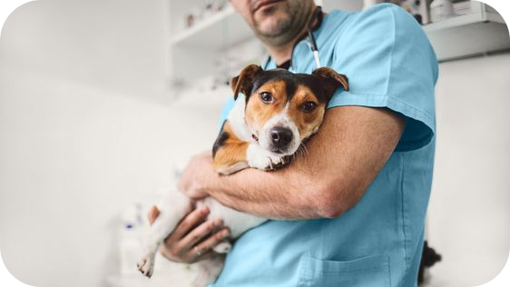
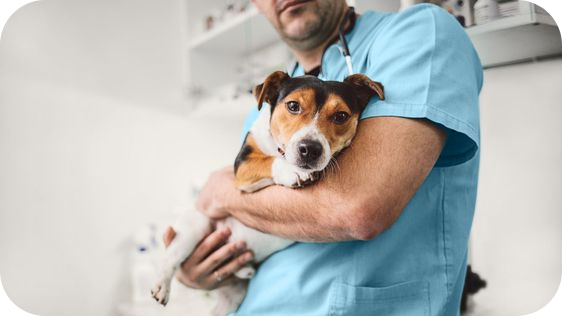
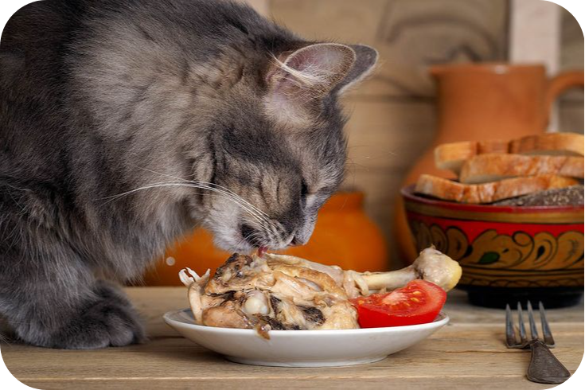
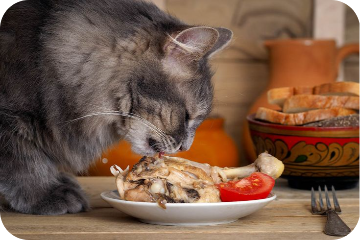

Dogs
Food
Dogs require a balanced diet that includes protein, carbohydrates, fats, vitamins, and minerals. High-quality commercial dog food is often recommended, but you can also feed them a homemade diet under the guidance of a veterinarian.
Avoid feeding dogs chocolate, grapes, raisins, onions, garlic, and foods high in fat.
 

Exercise
Regular exercise is essential for dogs to maintain a healthy weight, mental stimulation, and overall well-being.
Aim for at least 30 minutes to 1 hour of exercise per day, depending on the breed and age of your dog.
You can go on a walk with your god for 30 minutes to one our each day.
Hydration
Always provide fresh, clean water for your dog to drink. Hydration is crucial for their health and helps regulate body temperature.
 

Regular Veterinary Check-ups
Schedule regular visits to the veterinarian for check-ups, vaccinations, and preventive care. Your vet can also advise on parasite control and dental care.
 

Cats
Food
Cats are obligate carnivores and require a diet high in animal protein. Feed them high-quality commercial cat food or a balanced homemade diet. Avoid feeding cats onions, garlic, chocolate, caffeine, and foods high in fat.
 

Hygiene
Cats are clean animals and require regular grooming, including brushing their coat, trimming their nails, and cleaning their litter box daily.

Indoor Environment
Provide a safe and enriching indoor environment for your cat with plenty of toys, scratching posts, and elevated spaces to climb and perch.
Veterinary Care
Like dogs, cats also need regular veterinary check-ups, vaccinations, and preventive care.
Birds
Diet
Offer your bird a varied diet that includes pellets, fresh fruits, vegetables, and seeds. Avoid feeding birds avocado, chocolate, caffeine, alcohol, and foods high in salt or sugar.
Cage Maintenance
Keep your bird's cage clean by regularly removing droppings, replacing bedding, and providing fresh water. Provide perches of different sizes and textures to promote foot health.
Socialization
Birds are social animals and require daily interaction and mental stimulation. Spend time with your bird, talk to them, and provide toys and activities to keep them engaged.
Regular Vet Visits
Schedule regular check-ups with an avian veterinarian to monitor your bird's health, trim their nails, and address any potential health issues.
Rabbits
Diet
Rabbits need a diet high in fiber, including hay, fresh vegetables, and a small amount of pellets. Avoid feeding rabbits high-carb or sugary foods like bread, crackers, or sweets.
Housing
Provide a spacious and secure enclosure for your rabbit with room to hop, stretch, and hide. Line the enclosure with bedding material and clean it regularly to prevent health issues.

Exercise
Rabbits are active animals and require regular exercise to maintain their physical and mental health. Allow your rabbit supervised time outside of their enclosure to explore and exercise.
Veterinary Care
Schedule regular check-ups with a veterinarian experienced in rabbit care. Keep an eye on your rabbit's dental health, as they can develop dental problems if their teeth become overgrown.